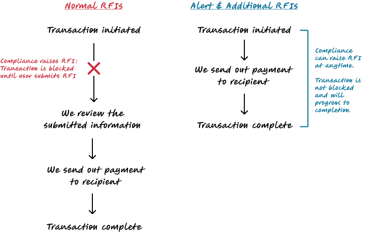
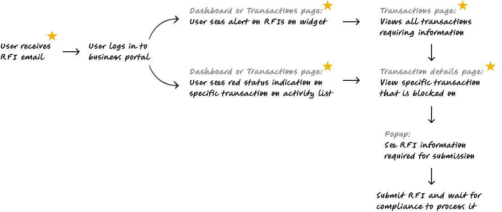
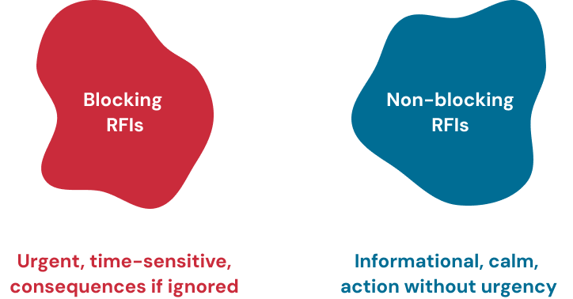
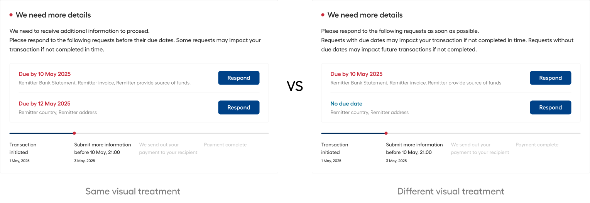
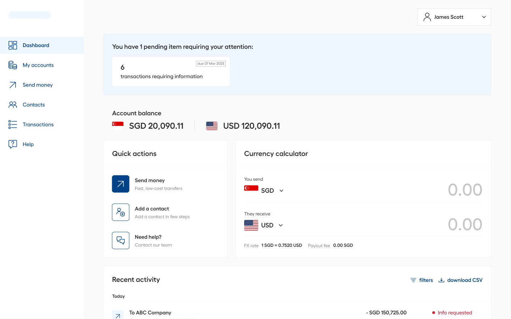
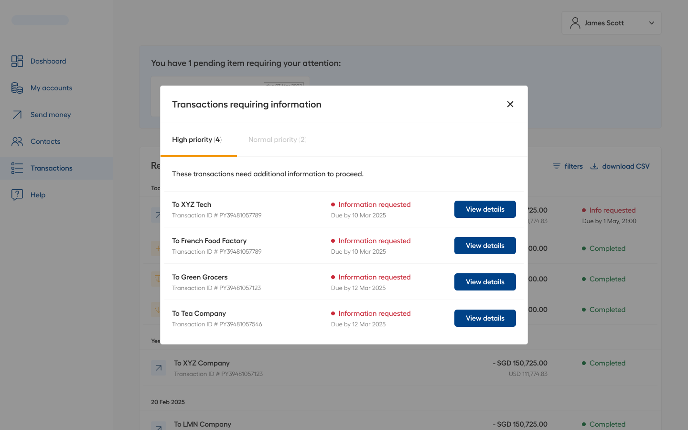
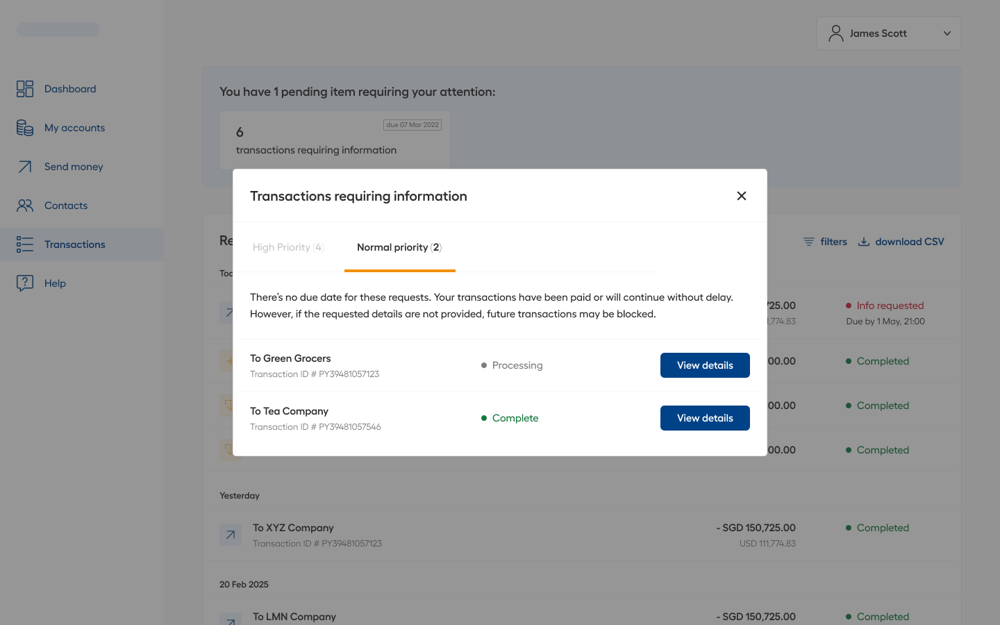
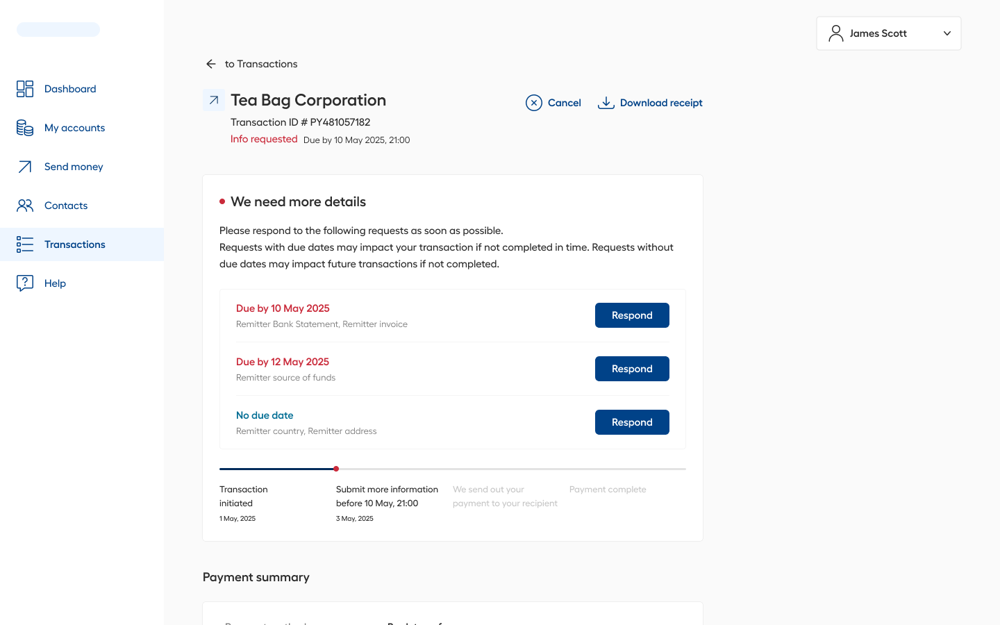
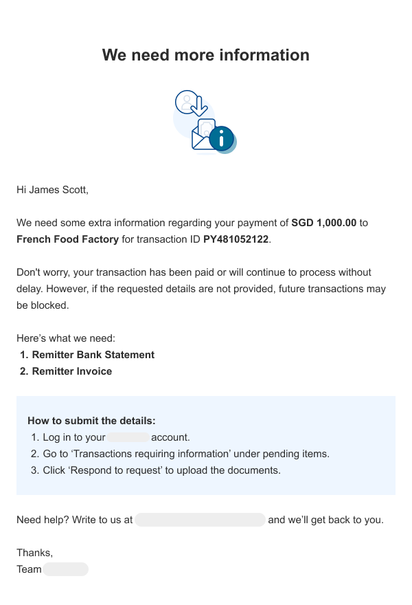
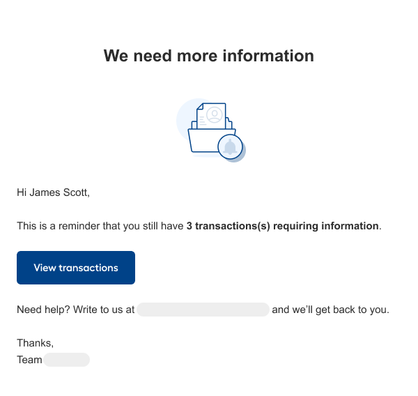

Compliance requests, without the urgency
Some transactions get flagged by compliance based on things like keyword matches, transaction amounts, or risk indicators. The portal handled this by blocking the transaction to request more information from the client. Now there are 2 new compliance request types. Neither blocks a transaction, but both still need a response.

Same system, different stakes
When a transaction gets flagged (based on things like keywords, amounts, or risk indicators) the compliance team sometimes require more information before they can sign off. These requests are called RFIs. There are three types, and they don't all work the same way.
The existing portal was built to already handle Normal RFIs. When one is raised, the transaction pauses and the client has to respond before funds go anywhere. That experience was working well. We have clear alerts, a response interface, approver notifications and consequence language if nothing gets done.
The new ask was to add the 2 other types: Additional RFIs and Alert RFIs. Both are non-blocking. This means that the transaction keeps moving, funds can land and the request can come in at any point, including after everything is done and dusted.
Normal RFI
Transaction is paused. The client needs to respond within 15 days before anything moves forward, else the transaction will be cancelled.
Additional RFI and Alert RFI
Transaction keeps processing. The request can arrive at any point, including after completion. These are still required to be filled up by users, just not as urgent.
Give compliance the ability to raise non-blocking RFIs for clients, and give clients a clear way to respond through the portal. While doing so, we make sure that transactions keep processing, audit requirements are met, and clients understand what is being asked of them.
This task wasn't about building an RFI experience from scratch. It was fitting a quieter, lower urgency request type into a system that was built to feel urgent. If it was too similar to the existing blocking RFI, clients would panic over a routine request. If it was too understated, then clients would ignore it entirely.

Working through the extension
Understanding what already existed
The first thing I did was map the existing Normal RFI flow end to end. Understanding what was already there mattered before adding anything since the goal was to extend the system. I went through every touchpoint: the dashboard alert, the held status on the transaction summary, the response interface on the detail page. That became the reference point for what the new types needed to feel consistent with, without being identical.

Figuring out urgency
The blocking RFI experience was deliberately high-signal, with prominent alerts and explicit consequence language. That was right for a held transaction where time matters and there are real consequences for ignoring it.
However, non-blocking RFIs needed a different tone within the same surfaces.
The answer was colour: Red and blue.

Working out where it needed to appear
A blocking RFI gets noticed because the client is already looking for it. Their transaction is stuck and they want to know why. A non-blocking RFI might arrive on a transaction the client considers closed, so the design couldn't rely on them going back to look.
Three places made sense.
Reviews and iteration
I shared early concepts with the product manager and compliance team across several rounds. Their input shaped the copy for the notification emails, particularly the right level of explanation without being alarming, and the variable fields needed for the reminder template.
Should we have just made everything red?

There was a real question during the process when compliance suggested to flatten the visual treatment by making blocking and non-blocking RFIs look the same to drive better response rates from clients. If there were different visual treatments, clients might feel that non-blocking RFIs have no immediate consequence and deprioritise them.
We ultimately decided against it as misrepresenting urgency to nudge behaviour tends to backfire. Once clients notice that "red" doesn't always mean something is actually at risk, the signal loses its meaning. The next time they see a red RFI, they might assume it's another low-urgency one and ignore it anyway.
The goal was to keep the distinction honest and use copy to communicate the real downstream consequences instead.
Non-blocking RFIs include clear disclaimers that pending requests may affect the client's ability to transact in future. That's accurate, not alarming, and gives clients a genuine reason to act. Combined with reminder emails that continue until the RFI is resolved, the system creates sustained pressure without crying wolf.
Designing for complexity across every entry path
The flow needed to work whether a client came in through the dashboard or landed directly on a transaction detail page. Both paths had to feel coherent, and both had to handle the same underlying complexity: a mix of RFI types, each with different urgency, potentially stacked on the same transaction.
The Dashboard: a single place to see everything pending
The portal already had a "Transactions requiring information" widget on the dashboard showing a count of pending RFIs. I kept it as is since the widget itself worked. What I added was the behaviour when you clicked on it. Previously there was nothing.
Now clicking on it opens a pop-up that lists all pending RFIs across the client's transactions. Clients can see everything that needs their attention in one place without having to go hunting through individual transactions.

The pop-up splits into two tabs. Blocking RFIs (that are high in priority) come first since they're tied to held transactions, they have due dates, and ignoring them has real consequences. Non-blocking RFIs (Normal priority) sit in the second tab. Still required, but the transaction is not affected by the RFI. The tab order communicates priority without having to spell it out.
From either tab, clicking on "Respond" takes the client straight to that specific transaction detail page, where the RFI pop-up opens automatically.


The Transaction Details page: designed for multiple states
Not every client comes in through the dashboard. Some land directly on a transaction detail page from an email link, from search or from their transaction history. The design had to hold up from this entry point too, which meant thinking carefully about all the states it could be in.
If there are multiple RFIs on one transaction, they appear as a list. Blocking RFIs sit at the top in red with a visible due date. Non-blocking RFIs follow in blue, which are present and actionable, but clearly lower priority. The colour and order do the work so clients don't have to read through everything to understand what matters most.
Each row in the list represents one RFI. Compliance submits requests in batches by selecting all the documents or information they need at once and compiling them into one form. Each row maps to one complete form rather than one individual field. Clicking "Respond" on any row opens the RFI pop-up, which the client fills in and submits.

Getting the transitions right
One of the things I spent time on was what happens after a client submits an RFI. It sounds straightforward but there were different outcomes depending on what was left, and getting the wrong one would have left clients unsure whether they were done.
More than one RFI still pending
The list view stays, updated to show what's been resolved and what's still open.
Only one RFI remaining
The view switches from the list to the single RFI state, so the last remaining item gets the right level of focus.
If everything is done, the page returns to the standard transaction detail view. For non blocking RFIs, transaction status remains processing or completed. For blocking RFIs, we show a status confirming the submission is under review.
Email notifications
For clients who don't log into the portal regularly, email was the most important touchpoint. We used 2 email templates, one for when an RFI is first raised, one as a reminder for clients who haven't responded yet. Both include the client name, the count of pending RFIs, and a direct link to the transaction summary page. Enough context to understand what's needed and where to go, without having to contact support first.


Compliance without the noise
The non-blocking RFI flow gave the compliance team a reliable channel to follow up on completed transactions without resorting to ad hoc emails or support tickets. Clients now have a consistent experience whether their transaction is held or already complete.
The emails reduced response friction. Clients could understand what was needed from the notification itself without having to contact support for context first. And by keeping the visual language clearly distinct from blocking RFIs, the new flow avoided creating unnecessary alarm around routine compliance requests.